Dabin Kim 多彬 - Typography ↔ Print + Digital --- Dabin Kim 多彬 - Typography ↔ Print + Digital --- Dabin Kim 多彬 - Typography ↔ Print + Digital --- Dabin Kim 多彬 - Typography ↔ Print + Digital ---
(Dabin Kim) is - Typography Apprentice. Have great interest in discovering patterns beneath the surface of human features and society through urban space. Tries to expand the boundary of visual language, work in and out between digital surface and tangible surface. Currently based in Seoul, Korea.
Contact → dabinkiim@gmail.com • instagram • Photo • To visit my other Web → github
I value small practices. To check more, Typography _ Coding _
( Archive ) Index → (2021) Typegajok Project (11-12) ••• (2020) Counting Sheep(Web) (10), Widow-workshop (8-9), AsiaGoogleTypography (7), Scratch(Web) (6), Ci·ti·men·tal (4-5) ••• (2019) Yeoui-do Project (3), Squatting Practice (1-2)
(2021)
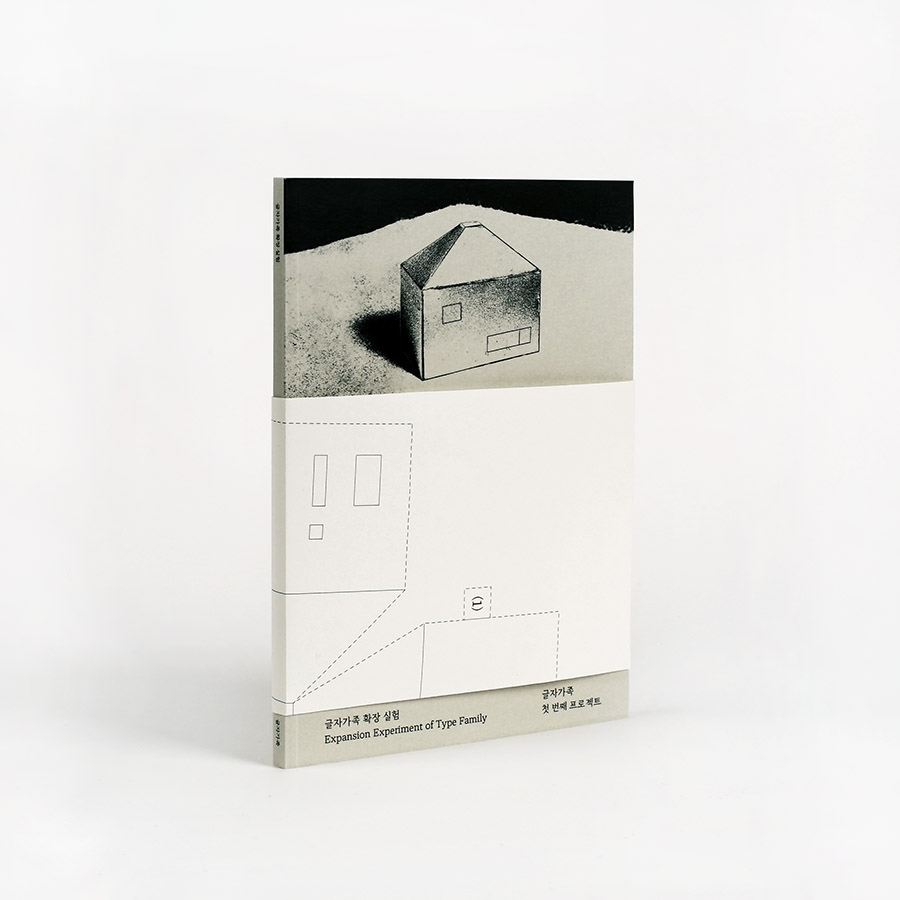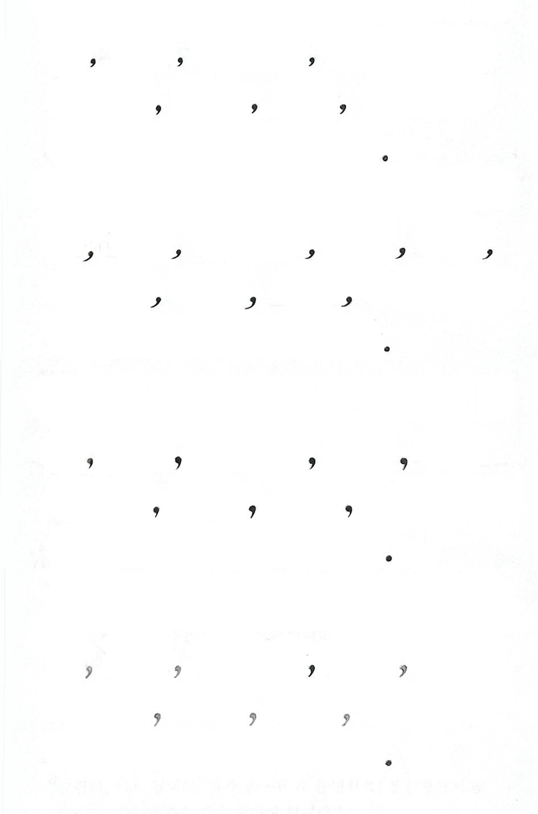 8
(2020) 7
 6
6
 5
4
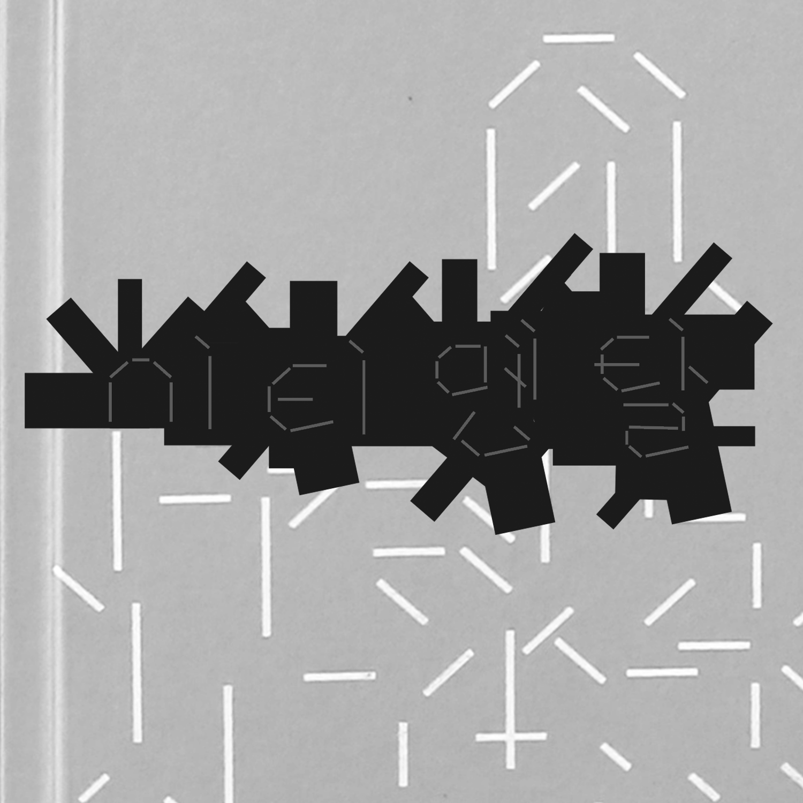
5
4
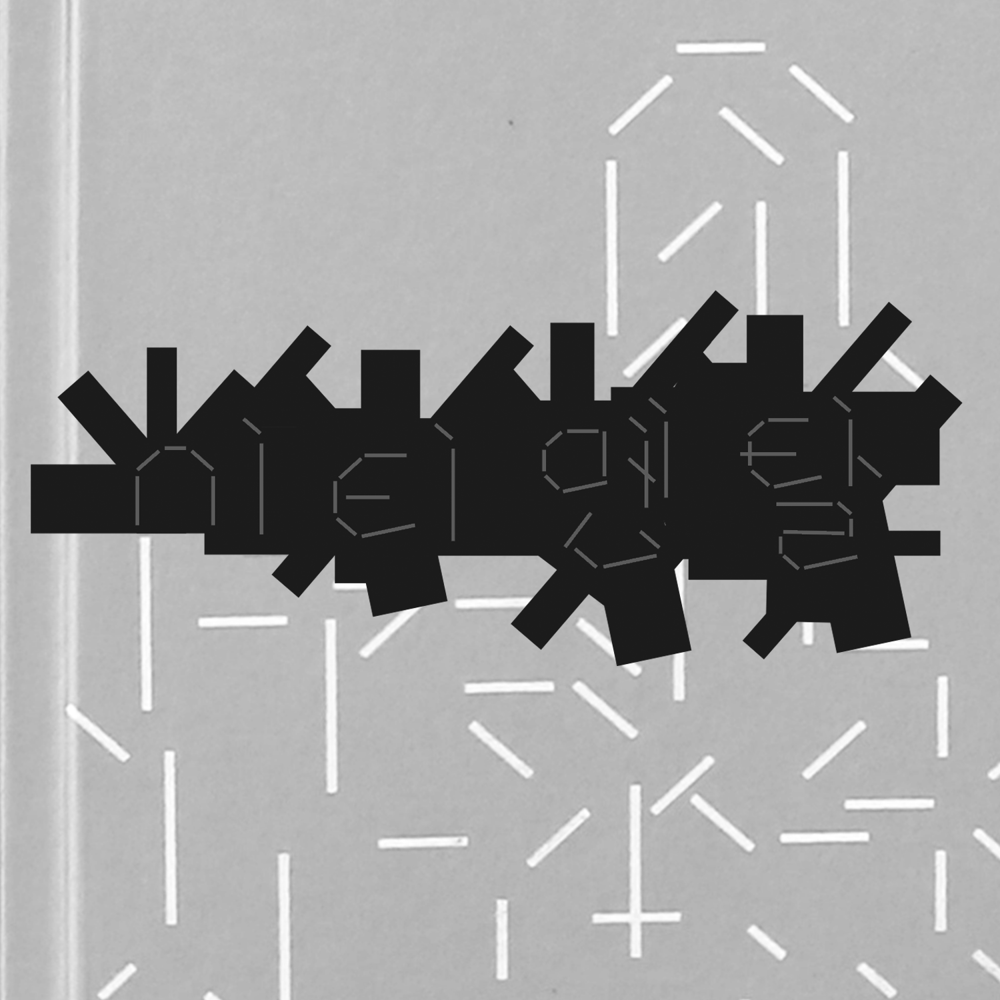 
 3
3
(2019) 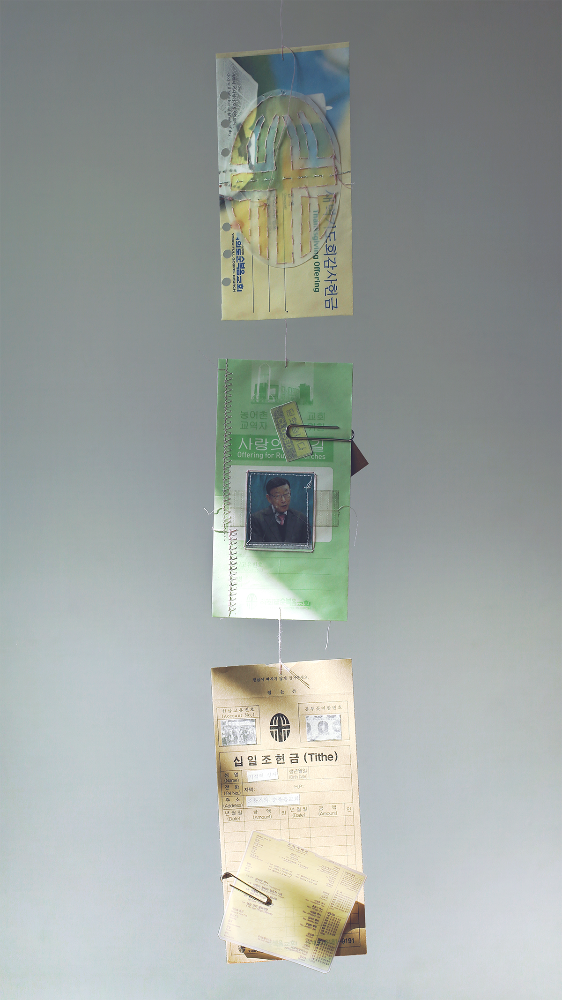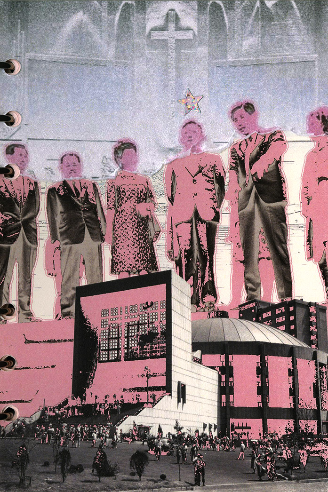 2 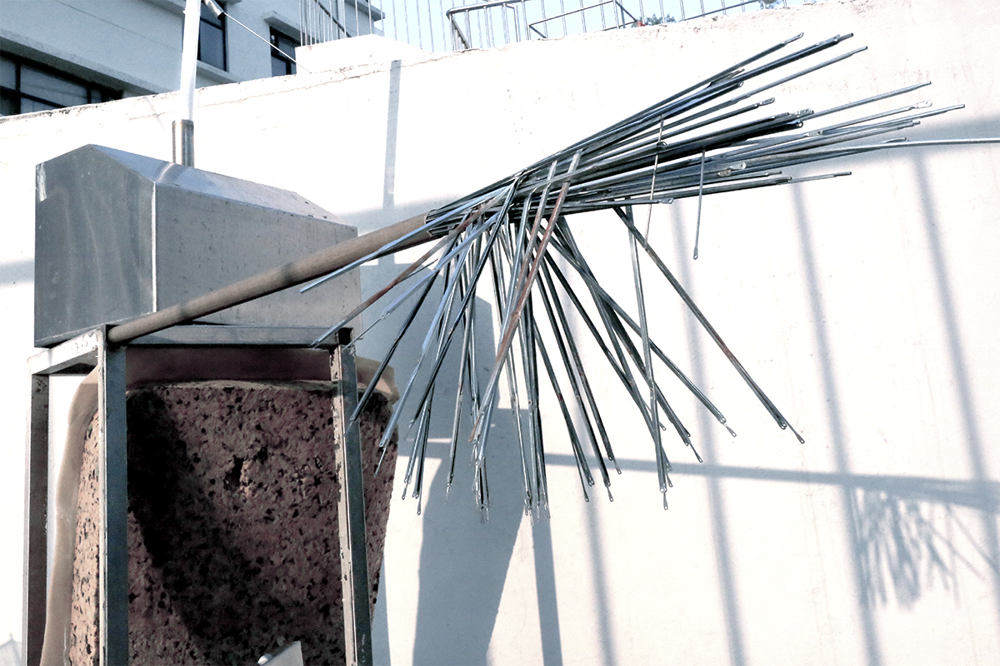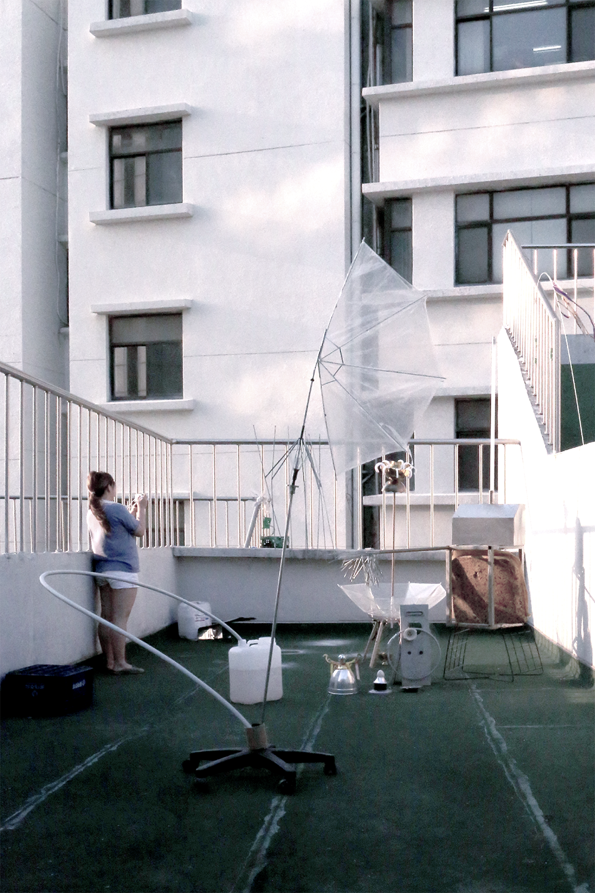 1
(2020) 7
6
5
4
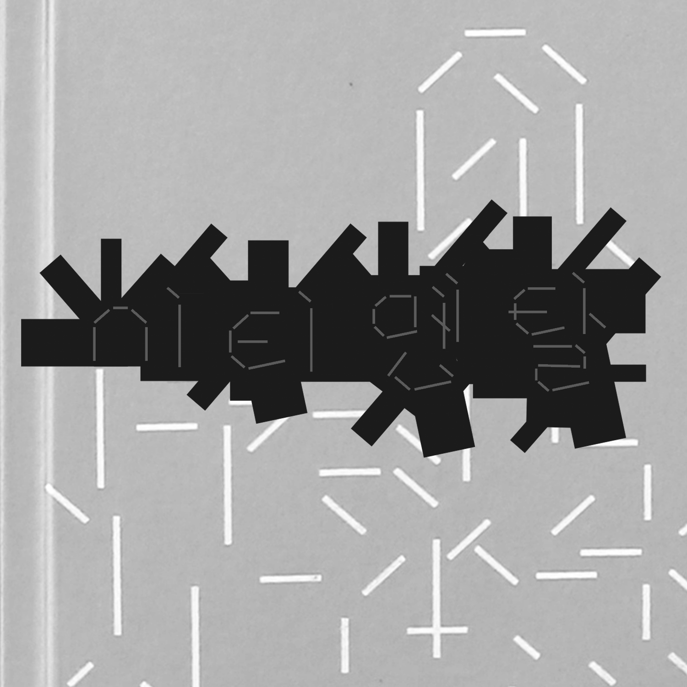 3
(2019) 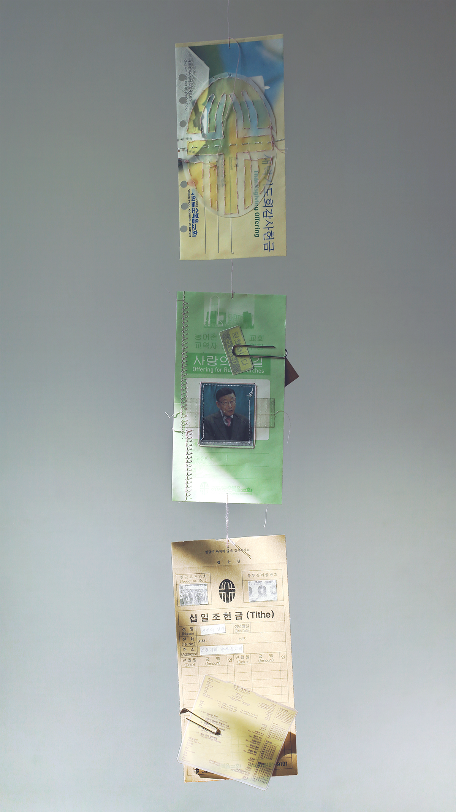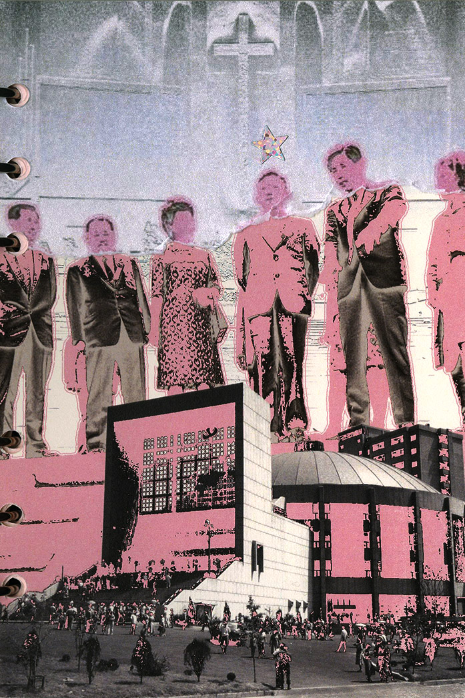 2 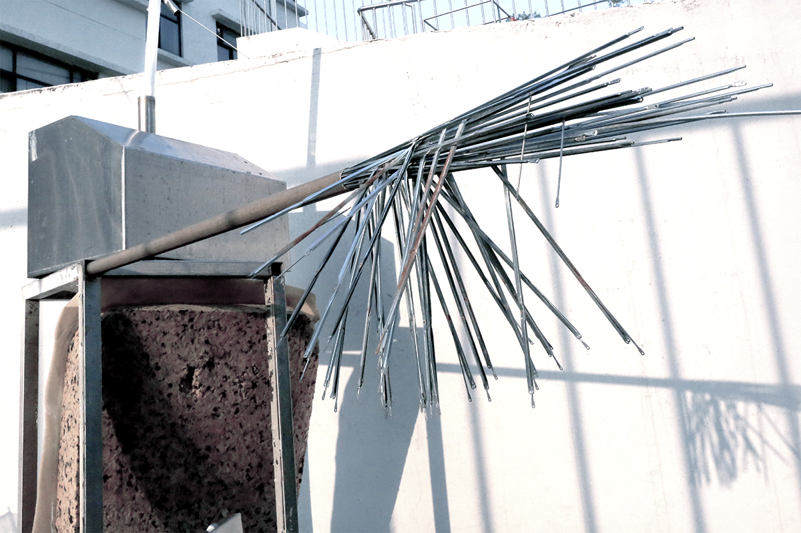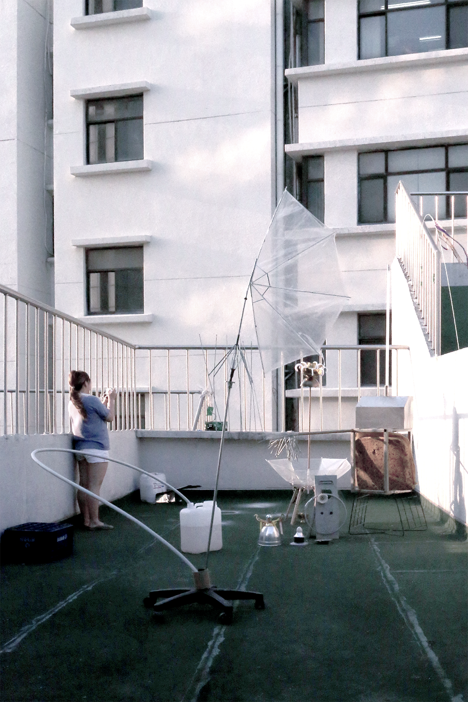 1